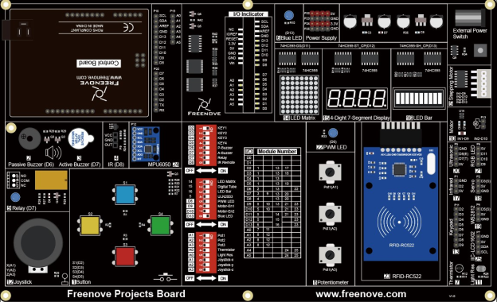

Week 1+2: Start a GitHub Pages Website, Start Tutorial, Develop and Submit a Proposal
A large part of week 1+2 was spent developing the project proposal and crafting a project timeline. Early chapters of the project board tutorial (completed in week 2) explain the basics of the Arduino integrated development environment (IDE), as well as how to create, compile, push and test Arduino firmware. The project board tutorial explains the basic concepts of driver functions, including the roles of the setup() and loop() driver methods and how to use system calls to control and communicate with prototype electronics via comm. hubs, electrical circuits, and free-range communication exchange media (e.g., infrared, RFID, etc.). The Arduino IDE software provides a feature rich and intuitive development platform. The set up involves a simple download from the official Arduino website, and choosing a folder to contain future source files. The only pitfall that I encountered during this set up was an apparent incompatibility of Arduino IDE generated files and the GitHub repository stored on my local computer. According to the generated error messages, the GitHub repository on my local computer creates an environment that is too complex for the Arduino IDE to interact with. While investigating this finding, I observed that each sketch (another term for an Arduino source file) generates a number of dependency files during compile time, producing a "bloat ratio" in the range of 2-3 new files for each new sketch. GitHub compatiblity issues aside, the IDE software provides a great list of features including a file manager, terminal shell, and editor. Programming in the Arduino dialect of C++ involves a mixture of object-oriented programming, development of sys- and trap- calls, and tactful use of Arduino-defined function stems, including "setup()", "loop()", and "digitalWrite()". Arduino developers are free to define helper functions of any kind, subject only to the hardware constraints of the single-board the firmware is loaded on.

Figure 1.) Snapshot of the Arduino integrated development environment (IDE).
Chapters 1: LED Blink
Chapter one of this tutorial explains the concept of converting analog to digital signals. The
chapter describes the LED circuit and the role of the "setup()", "loop()", "delay()" and
"digitalWrite()" functions in firmware. Each of these principles is demostrated through a
firmware program designed to drive a blinking LED.
Sketch: LED_Blink
/* Chapter 1 */
// the setup function runs once when you press reset or power the board
void setup() {
// initialize digital pin 13 as an output
pinMode(13, OUTPUT);
}
// the loop function runs over and over again forever
void loop() {
digitalWrite(13, HIGH); // turn the LED on (HIGH is the voltage level)
delay(1000); // wait for a second
digitalWrite(13, LOW); // turn the LED off by making the voltage LOW
delay(1000); // wait for a second
}
Chapter 2: Flowing LED
Chapter 2 of this material demonstrates the object-oriented nature of firmware development by using
loops and basic data structures (i.e., arrays) to synchronize and control circuits of electronic
devices, in this case, a panel of LEDs.
Sketch: Flowing_LED_Display
/* Chapter 2 */
const int ledCount = 14; // the number of LEDs
// an array of pin numbers to which LEDs are attached
int ledPins[] = { 0, 1, 2, 3, 4, 5, 6, 7, 8, 9, 10, 11, 12, 13 };
void setup() {
// loop over the pin array and set them all to output:
for (int i = 0; i < ledCount; i++) {
pinMode(ledPins[i], OUTPUT);
}
}
void loop() {
// the ith LED will light up in turn
for (int i = 0; i < ledCount; i++) {
barGraphDisplay(i);
}
for (int i = ledCount-1; i >=0; i--) {
barGraphDisplay(i);
}
}
void barGraphDisplay(int ledOn) {
// make the "ledOn"th LED on and the others off
for (int i = 0; i < ledCount; i++) {
if (i == ledOn)
digitalWrite(ledPins[i], HIGH);
else
digitalWrite(ledPins[i], LOW);
}
delay(100);
}
Chapter 3: Control LED with a Push Button Switch
Chapter 3 of this tutorial explains the circuit fundamentals of controlling circuit behavior with a
button-based switch.

Figure 2.) A diagram of a button-controlled circuit.

Figure 3.) Control state of the project board. (IDE).
The first sub-section of this chapter discusses how the voltage state of the circuit in figure 3
can be encoded as a meaningful signal state by applying the firmware to the control board set to
the configuration shown in figure 3.
Sketch: Control_LED_by_Button
/* Chapter 3 - mini-project 1 */
/* This sketch maps the voltage detected on a closed circuit created by the button to an
LED ON state that persists as long as the button is held down. */
int buttonPin = 2; // the number of the push button pin
int ledPin = 13; // the number of the LED pin
void setup() {
pinMode(buttonPin, INPUT); // set push button pin into input mode. (says "read the signal here.")
pinMode(ledPin, OUTPUT); // set LED pin into output mode. (says "affect the cicuit component at this location.")
}
void loop() {
if (digitalRead(buttonPin) == HIGH) // if the button is not pressed
digitalWrite(ledPin, LOW); // switch off LED
else // if the button is pressed
digitalWrite(ledPin, HIGH); // switch on LED
}
The second sketch design maintains the "ON" or "OFF" state of the LED subcircuit until the button
is pressed again. This is commonly referred to as programming a "persistant state" in the controller.
Included in the circuit knowledge of this chapter is a discussion about controlling "bounce" in
electrical cicuits. Bounce is a phenomena created by micro-imbalances in the electrical signal prior
to achieving a maintainable state. Controlling bounce essentially involves inoking a delay prior to
the interpretation of an electrical state signal. If bounce is left uncontrolled by the device
firmware, the state of the controlling device (i.e., button) is read during a period of oscillation,
causing the firmware to react rapidly to the perceived ON/OFF state detected in the circuit.
We can see how this sleep()-like system call is applied in the driver firmware by reading the sketch
code snippet below.
Sketch: Control_LED_State_by_Button
/* Chapter 3 - mini-project 2 */
int buttonPin = 2; // the number of the push button pin
int ledPin = 13; // the number of the LED pin
boolean isLighting = false; // define a variable to save the state of LED
void setup() {
pinMode(buttonPin, INPUT); // set push button pin into input mode
pinMode(ledPin, OUTPUT); // set LED pin into output mode
}
void loop() {
if (digitalRead(buttonPin) == LOW) { // if the button is pressed
delay(10); // delay for a certain time to skip the bounce
if (digitalRead(buttonPin) == LOW) { // confirm again if the button is pressed
reverseLED(); // reverse LED
while (digitalRead(buttonPin) == LOW); // wait for releasing
delay(10); // delay for a certain time to skip bounce when the button is released
}
}
}
void reverseLED() {
if (isLighting) { // if LED is lighting,
digitalWrite(ledPin, LOW); // switch off LED
isLighting = false; // store the state of LED
}
else { // if LED is off,
digitalWrite(ledPin, HIGH); // switch LED
isLighting = true; // store the state of LED
}
}
Chapter 4: Sending/Receiving Data Through a Serial Communication Port (AKA "Comm. Port")
Chapter 4 discusses